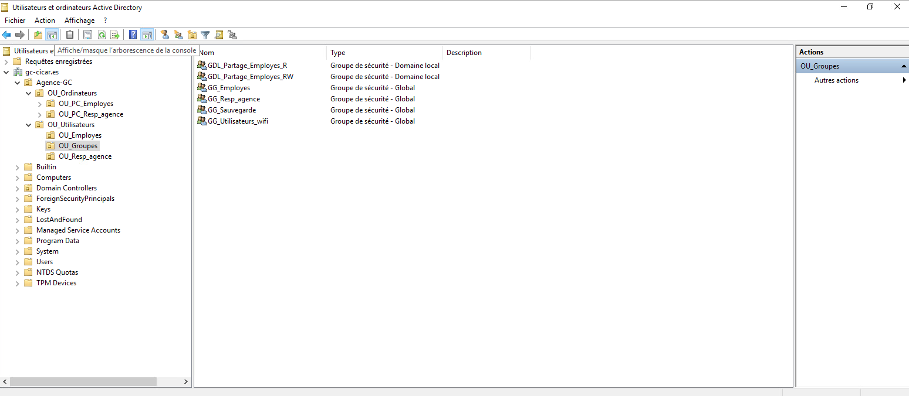

Architecture du serveur
Vue d'ensemble des rôles déployés sur le serveur Srv-2k19
Active Directory Domain Services
Annuaire centralisé pour la gestion des utilisateurs, groupes et machines
AD DS — Active Directory
Rôle principalL'Active Directory Domain Services est le cœur du serveur. Il permet de centraliser la gestion des identités et des accès au sein d'un domaine Windows. Toutes les machines et utilisateurs du réseau sont intégrés au domaine pour une administration unifiée.
- Création du domaine — mise en place du contrôleur de domaine (DC) principal
- Gestion des utilisateurs — création de comptes, attribution de rôles et permissions
- Unités d'organisation (OU) — structuration hiérarchique des objets du domaine
- Groupes de sécurité — regroupement d'utilisateurs pour la gestion des droits
- Jonction de postes — intégration des machines clientes au domaine

Intégration de nouveaux utilisateurs
Script PowerShell afin d'ajouter de nouveaux utilisateurs.

DNS & DHCP
Résolution de noms et attribution automatique des adresses IP
DNS — Domain Name System
Résolution de nomsLe service DNS permet de traduire les noms de domaine (ex. : srv-2k19.local) en adresses IP et inversement. Indispensable au fonctionnement de l'Active Directory, il est installé sur le même serveur que le contrôleur de domaine.
- Zone de recherche directe — résolution nom → adresse IP
- Zone de recherche inversée — résolution adresse IP → nom
- Enregistrements A et PTR — associent machines et adresses IP
- Intégration AD — zones DNS intégrées à l'annuaire pour la réplication

DHCP — Dynamic Host Configuration Protocol
Attribution IP automatiqueLe serveur DHCP attribue automatiquement une adresse IP, un masque de sous-réseau, une passerelle et un serveur DNS à chaque machine qui se connecte au réseau, évitant toute configuration manuelle sur les postes clients.
- Création d'une étendue (scope) — plage d'adresses IP à distribuer
- Durée de bail — durée pendant laquelle l'IP est réservée
- Exclusions — adresses réservées aux équipements fixes (serveur, imprimantes)
- Options DHCP — passerelle par défaut et DNS transmis automatiquement
- Autorisation dans AD — le serveur DHCP est autorisé dans le domaine

GPO
Application des stratégies de groupe
GPO — Group Policy Objects
Stratégies de groupeLes GPO permettent d'appliquer des configurations et restrictions automatiquement sur l'ensemble des postes et utilisateurs du domaine, sans intervention manuelle. Elles sont liées aux Unités d'Organisation (OU) de l'Active Directory.
- Déploiement de logiciels — installation automatique d'applications sur les postes
- Paramètres de sécurité — politique de mots de passe, verrouillage de compte
- Restrictions utilisateurs — interdiction d'accès au panneau de configuration, etc.
- Configuration réseau — lecteurs réseau mappés, imprimantes déployées automatiquement
- Scripts de démarrage/fermeture — exécution de scripts à l'ouverture de session

Bureau à distance (RDS)
Accès distant sécurisé au serveur et aux ressources
RDS — Remote Desktop Services
Accès à distanceLe Bureau à distance (RDS) permet aux utilisateurs autorisés de se connecter à distance au serveur via le protocole RDP. Utilisé en formation pour administrer le serveur Srv-2k19 depuis les postes clients, simulant une situation réelle d'entreprise.
- Activation du Bureau à distance — activation du service RDP sur le serveur
- Utilisateurs autorisés — seuls les comptes AD autorisés peuvent se connecter
- Sécurisation NLA — authentification Network Level Authentication activée
- Pare-feu — ouverture du port 3389 pour les connexions RDP entrantes